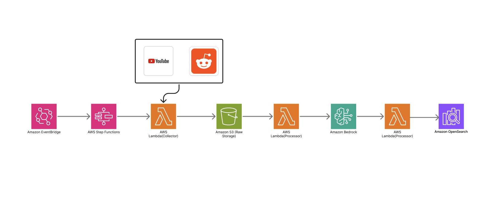
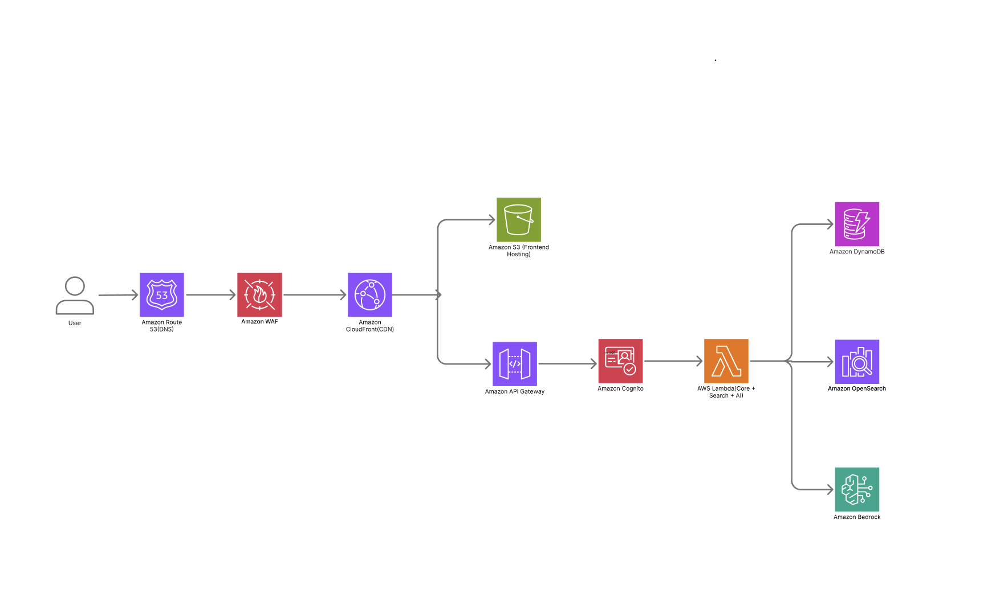

← Back to Projects
Data Pipeline Architecture
Scheduled collection, AI analysis, and OpenSearch
indexing
User-Facing Architecture
CloudFront web app with API Gateway, Cognito, and Lambda
Frontend Demo
AWS Architecture Demo
TrendPulse – AI Trend Intelligence for Travel Creators
An AI-powered trend analysis platform for travel content creators that collects online travel data, analyzes trends with AI, and delivers insights and content ideas.
Overview
TrendPulse is an AI-powered trend analysis platform designed for travel content creators. The platform collects travel-related data from online sources, analyzes trends with AI, and provides insights and content ideas to help creators produce timely content.
Tech Stack
Architecture Diagram


Workflow
- Scheduled data collection from online platforms.
- Data storage and preprocessing in AWS.
- AI-powered trend analysis and indexing.
- Trend search and visualization through the web application.
Key Features
- Scheduled trend data collection
- AI-powered trend analysis
- AI-generated content ideas
- Travel trend search
- AWS serverless architecture
My Contributions
- Contributed to the design of the overall AWS architecture for both the data pipeline and user-facing services.
- Designed a serverless data pipeline using EventBridge, Step Functions, Lambda, S3, Bedrock, and OpenSearch.
- Selected AWS services based on scalability, maintainability, and cost considerations.
- Estimated AWS infrastructure costs and evaluated deployment strategies for the project.
- Participated in technical discussions on cloud architecture and system design.
Challenges
- Designing an event-driven architecture capable of handling scheduled data processing workflows.
- Selecting appropriate AWS services while balancing system requirements and infrastructure costs.
- Structuring a modular architecture that separates data processing from user-facing services.
What I Learned
- Learned how to design end-to-end serverless architectures on AWS.
- Gained practical experience selecting AWS services based on scalability, maintainability, and cost.
- Improved my understanding of cloud architecture design and event-driven systems.
- Learned how to estimate cloud infrastructure costs during the system design process.